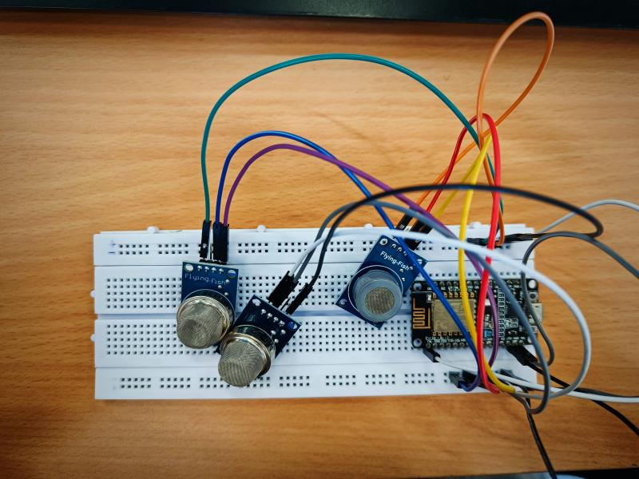
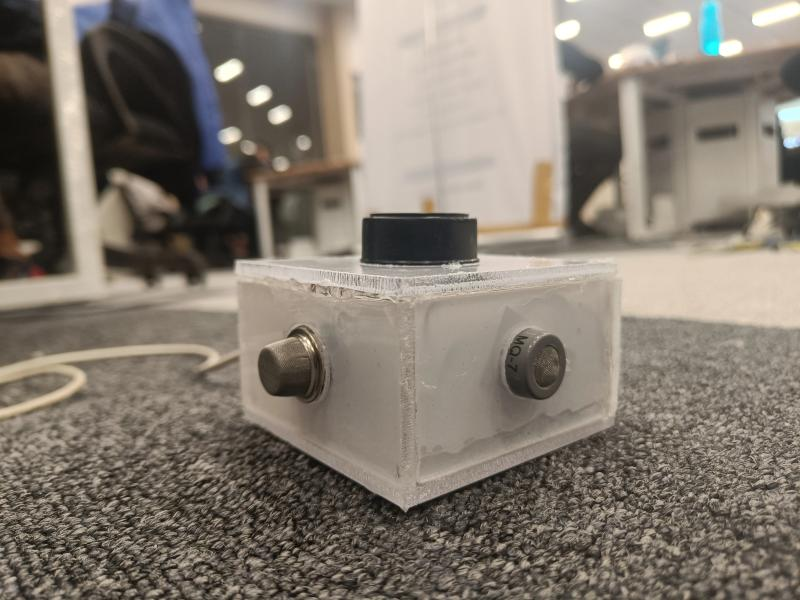

Meet the Team

Challenges in Mitigating Unsafe Sewar and Septic Tank Cleaning Practices
In response to the challenges associated with unsafe sewer and septic tank cleaning practices, our project aims to develop innovative solutions that prioritize safety, efficiency, and environmental sustainability. We have incorporated multiple gas sensors for the detection of hazardous gases within the septic tank. As the gas levels reach a hazardous threshold, a buzzer is triggered to alert the worker, indicating the need for immediate evacuation.
Additionally, the gas levels are monitored and graphically displayed on the ThingSpeak platform in real-time. This allows for remote tracking of the septic tank conditions. In case of a hazardous gas level, an instant notification is sent to the contractor's phone, who is positioned safely outside the septic tank. This feature ensures timely response and intervention to mitigate potential risks to the workers involved.
View our project on canva :
View Project Presentation  Looking ahead, our project has the potential for further enhancements and applications. Some of the future scopes include: